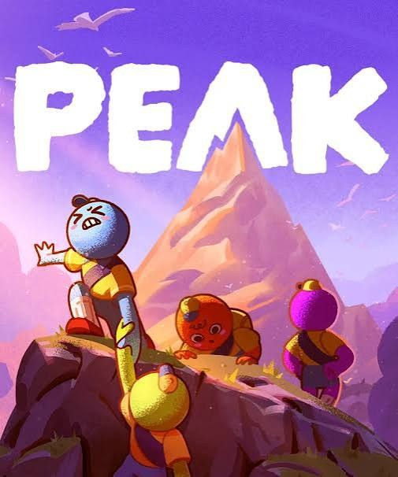

트렌드 코리아 2026의 '1.5가구' 키워드를 바탕으로, 인디 협동 게임 PEAK에서 진행하는 2주짜리 랜덤 등반 이벤트를 기획했습니다. 혼자이지만 느슨하게 연결되고 싶은 유저 심리를 게임 속 협동 콘텐츠와 결합해, 신규 유입과 커뮤니티 확장을 함께 노렸습니다.
『트렌드 코리아 2026』은 '1.5가구'를 침해받고 싶지 않은 개인의 자율성(1)을 지키면서, 적당한 수준의 연결감(0.5)은 유지하려는 사람들로 설명합니다. 1인 가구가 보편화되는 가운데에서도 느슨하고 부담 없는 연결에 대한 수요는 오히려 커지고 있다는 뜻입니다.
게임 이용 행태에서는 이 흐름이 '가벼운 협동 플레이' 열풍으로 나타납니다. 《PEAK》, 《R.E.P.O.》 같은 소규모 인디 협동 게임이 2025년 스팀에서 크게 흥행한 배경에는, 정기적인 길드·클랜 활동 없이도 마음 맞는 사람과 짧게 접속해 즐기고 빠지는 방식이 있습니다.
이 이벤트는 '따로 있지만 함께 있는 느낌'이라는 지점을 정면으로 활용합니다.
| 항목 | 내용 |
|---|---|
| 장르 | 최대 4인 협동 서바이벌·등반 |
| 특징 | 짧은 세션, 실패가 곧 재미 요소 |
| 흥행 배경 | 2025년 스팀 친구 그룹 코옵 열풍의 대표작 |
| 가격대 | 10달러 이하 저가형, 영상 시청 후 구매로 이어지기 쉬움 |
PEAK는 정형화된 길드 시스템 없이도 '같이 하는 순간'을 만들어 내는 구조라서 1.5가구 트렌드와 잘 맞습니다. 등반 중 생기는 실수와 협동 실패가 그 자체로 웃음 포인트가 되어 짧은 클립으로 퍼지기 좋고, 이벤트 참여자가 '가볍게 왔다가도 콘텐츠를 남기고 가는' 흐름을 설계하기에도 유리합니다.
이벤트명: 「따로, 또 같이」 랜덤 등반 위크
핵심 콘셉트: 매일 정해진 시간에만 열리는 '오늘의 등반조'에 무작위로 배정되어, 낯선 3인과 짧게 협동하고 흩어집니다. 관계가 이어지지 않아도 되고, 원하면 다시 친구로 이어질 수도 있습니다. (이벤트 기간 한정으로 랜덤 매칭을 도입한다는 전제의 제안입니다.)
진행 방식
핵심 미션
| 미션명 | 내용 | 보상 |
|---|---|---|
| 오늘의 등반 | 배정된 3인과 정상까지 도달 | 시즌 전용 장식 아이템 |
| 실패 배지 | 등반에 실패해도 특별 배지 지급 ('그래도 함께했다') | 프로필 배지 |
| 클립 챌린지 | 플레이 영상·짤을 해시태그와 함께 SNS에 업로드 | 추첨 상품 |
| 다시 만남 | 무작위로 만난 파티원과 친구 등록 | 소량 재화 |
콘텐츠 구성
| 구분 | 기간 | 내용 |
|---|---|---|
| 사전 예고 | D-14 ~ D-1 | 티저 이미지, 크리에이터 스포일러 공개 |
| 사전 신청 | D-7 ~ D-1 | 이벤트 참여 알림 신청 오픈 |
| 본 이벤트 | D-Day ~ D+13 (2주) | '오늘의 등반조' 일 3회 매칭 상시 진행 |
| 클립 챌린지 마감 | D+13 | SNS 업로드 마감 |
| 결과 발표·시상 | D+14 ~ D+17 | 클립 챌린지 당첨자 발표, 추첨 상품 지급 |
※ D-Day는 확정 후 반영하며, 방학·연휴 등 게임 이용 성수기와 겹치지 않는지 확인이 필요합니다.
| 단계 | 조건 | 보상 |
|---|---|---|
| 참여 보상 | '오늘의 등반조' 1회 이상 참여 | 시즌 전용 프로필 스킨 |
| 누적 보상 | 5회 참여 | 한정 등반 장비 스킨 |
| 누적 보상 | 10회 참여 (전 기간 완주) | 특별 칭호 + 실물 굿즈 응모권 |
| 클립 챌린지 | 우수 클립 선정 | 기프티콘 또는 게이밍 기어 추첨 |
| 다시 만남 보상 | 무작위 파티원과 친구 등록 | 소량 인게임 재화 |
보상은 고가치 확정형보다 '가볍게 계속하고 싶어지는' 저부담·고빈도 구조로 설계해, 매일 접속할 이유를 만드는 데 집중했습니다.
| 채널 | 실행안 |
|---|---|
| 스트리밍·유튜브 | 등반 실패 클립에 강한 크리에이터를 다수 섭외하고, 동시다발 방송으로 화제성 확보 |
| 인스타그램·틱톡 | 실패 순간을 담은 짧은 릴스 포맷으로 클립 챌린지 유도 |
| 커뮤니티 (디시, 스팀 포럼 등) | 일일 등반 결과 요약, 밈화 유도 |
| 공식 SNS·디스코드 | '오늘의 베스트 클립'을 매일 큐레이션해 발행 |
크리에이터는 대형 인플루언서보다 실패·해프닝 콘텐츠에 강한 중소형 코옵 전문 크리에이터를 우선 섭외합니다. PEAK류 게임이 애초에 클립형 콘텐츠 확산으로 흥행한 구조이기 때문입니다.
| 지표 | 측정 기준 |
|---|---|
| 일일 활성 참여자 수 (DAU) | 이벤트 기간 vs 직전 2주 평균 |
| 재접속률 | 이벤트 참여자의 D+7 재접속 비율 |
| 클립 챌린지 게시물 수 | 해시태그 기준 집계 |
| 신규 친구 등록 수 | '다시 만남' 보상 수령 건수 |
| 신규 유입 전환율 | 이벤트 유입 대비 실제 구매·설치 전환 |
트릭컬 리바이브의 재미는 '귀여운 캐릭터에 대한 애착'을 중심으로 수집, 서사, 운영이 맞물려 있는 구조에서 나온다고 보고, 3주년 600뽑기 증정 이벤트를 통해 이를 분석했습니다. 이벤트의 보상 구조를 살펴보고, 감각·수집·서사·전략·사회적 재미 다섯 가지 관점으로 나눠 정리한 뒤 한계와 개선 방향까지 제안했습니다.
| 항목 | 내용 |
|---|---|
| 게임명 | 트릭컬 리바이브 (에피드게임즈) |
| 장르 | 수집형 RPG |
| 분석 대상 | 3주년 업데이트 및 600뽑기 증정 이벤트 |
| 이벤트 기간 | 2026.09.24 ~ 10.22 |
| 분석 관점 | 감각 · 수집 · 서사 · 전략 · 사회적 재미 |
트릭컬 리바이브는 2023년 9월 27일 출시된 수집형 RPG로, 캐릭터 수집과 스토리 중심으로 서비스되어 왔습니다. 3주년을 맞아 9월 24일 대규모 업데이트가 진행되어 신규 엘다인 사도 '비비(신성)'와 '우이(기억)'가 추가되었고, 이후 국내 구글 플레이 매출 4위로 출시 이후 최고 순위를 기록했습니다.
| 단계 | 보상 | 설계 의도 |
|---|---|---|
| 즉시 지급 | 3주년 기념 테두리, 사도 모집 티켓 30장, 취향 모집 티켓 30장 | 접속 즉시 보상으로 첫인상 강화 |
| 누적 출석 | 최대 15일 출석 시 에르핀(왕도)·네르(빡침) 확정 모집권, 몽환의 메이아 선택권 등 | 지속 접속 유도, 운에 따른 손해 보완 |
| 추가 지급 | 15일 출석 보상에 포함된 사도·취향 모집 티켓 각 180장 | 대량 뽑기로 덱 구성 지원 |
분석: 보상을 '즉시 → 누적 → 확정' 단계로 나누어, 가챠 특유의 기대감은 유지하면서 결과가 나쁠 때의 실망감은 확정권으로 완화했습니다. 무료 재화라서 유저는 부담 없이 뽑기의 설렘만 경험할 수 있고, 신규·복귀 유저는 짧은 기간에 전력을 갖춰 본 콘텐츠에 진입할 수 있습니다.
'볼 꼬집기'로 대표되는 귀여운 캐릭터 디자인이 게임의 상징입니다. 전투력과 무관한 터치 반응이 캐릭터에 대한 애착을 만들고, 이는 다시 수집 동기로 이어집니다.
대량 뽑기로 다양한 캐릭터를 빠르게 확보하며 '모으는 재미'를 집중적으로 경험하게 합니다. 새 캐릭터 획득, 육성, 덱 변화로 이어지는 순환 구조가 플레이 동기를 유지시킵니다.
유머와 진지함을 오가는 풀보이스 스토리가 강점입니다. 귀여운 외형과 무거운 세계관의 대비가 '반전'을 만들며 몰입을 높입니다.
자동 전투 기반으로 조작 부담은 낮추고, 사도 배치와 조합, 육성 방향을 정하는 데에서 전략적 판단을 요구합니다.
1주년 '위험한 초대' 콘셉트 특별 방송 이후 매년 독창적인 형식의 방송이 관심을 모아 왔습니다. 3주년 방송에서는 무한도전 '죄와 길'을 패러디한 '죄와 볼' 코너로, 대표·PD 등 사업부와 핵심 개발진이 편을 나눠 재판을 벌이는 형식을 선보였습니다. 9월 27일부터는 홍대 골든 크레마에서 콜라보 카페도 진행되었습니다. 운영 자체가 콘텐츠가 되어, 유저가 개발사와 함께 노는 듯한 소속감을 만듭니다.
| 문제점 | 내용 | 개선 제안 |
|---|---|---|
| 뽑기 가치 하락 | 대량 무료 뽑기를 반복하면 1회 뽑기의 설렘이 줄어듦 | 이벤트 뽑기에 연출·수집 보상 차별화 |
| 출석 의무감 | 15일 누적 구조가 '숙제'로 느껴질 수 있음 | 누락일 보완 장치 (만회 출석 등) |
| 정보 과부하 | 한 번에 많은 캐릭터를 얻으면 육성 우선순위가 혼란스러움 | 보유 캐릭터 기반 추천 덱·육성 가이드 제공 |
트릭컬 리바이브의 재미는 '귀여운 캐릭터에 대한 애착'을 중심으로 수집·서사·운영이 맞물려 있는 구조에서 나옵니다. 3주년 600뽑기 이벤트는 이 애착을 대량으로, 부담 없이 경험하게 만드는 장치로서 신규·복귀 유저 유입과 기존 유저의 재몰입을 동시에 이끌어냈습니다. 다만 반복적인 대량 보상은 뽑기 자체의 가치를 떨어뜨릴 수 있으므로, 보상의 양보다 경험의 질을 차별화하는 설계가 장기적으로 필요합니다.